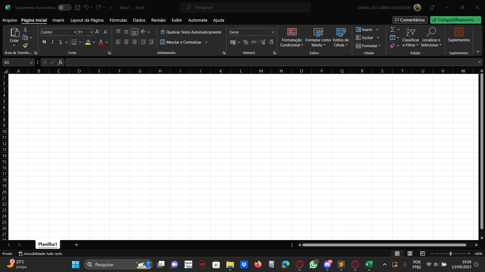

Página Inicial
A aba inicial do Microsoft Excel é a primeira aba localizada na faixa de opções do programa. Ela contém uma série de ferramentas e comandos essenciais para criar, formatar e editar planilhas de cálculo. A aba inicial é exibida por padrão quando você abre o Excel e oferece acesso rápido a várias funcionalidades comumente utilizadas.

Ferramentas
Formatação de Células: A formatação de células no Microsoft Excel é essencial para organizar e apresentar dados de forma clara e profissional. Com essa ferramenta, você pode ajustar o formato dos números, aplicar estilos de moeda, data ou porcentagem, além de controlar a formatação de texto dentro das células. Também é possível configurar o alinhamento do conteúdo, bordas e cores de preenchimento para destacar informações importantes em sua planilha.
Fórmulas: As fórmulas no Microsoft Excel são fundamentais para realizar cálculos complexos e automatizar tarefas matemáticas. Com essa ferramenta, você pode criar equações personalizadas que operam sobre os dados nas células. O Excel oferece uma ampla gama de funções predefinidas, como SOMA, MÉDIA, MÁXIMO e MÍNIMO, que facilitam a análise dos seus dados. Além disso, você pode usar referências de células para fazer cálculos dinâmicos, o que é crucial para análises financeiras, estatísticas e muito mais.
Ordenar e Filtrar: A opção de ordenar e filtrar no Microsoft Excel é essencial para classificar e visualizar seus dados de maneira conveniente. Com essa ferramenta, você pode classificar suas informações em ordem alfabética, numérica ou personalizada, de acordo com suas necessidades. Além disso, você pode aplicar filtros para exibir apenas os dados relevantes com base em critérios específicos, tornando a análise de grandes conjuntos de dados muito mais fácil e eficiente. Essa funcionalidade é valiosa para identificar tendências, outliers e padrões em seus dados.